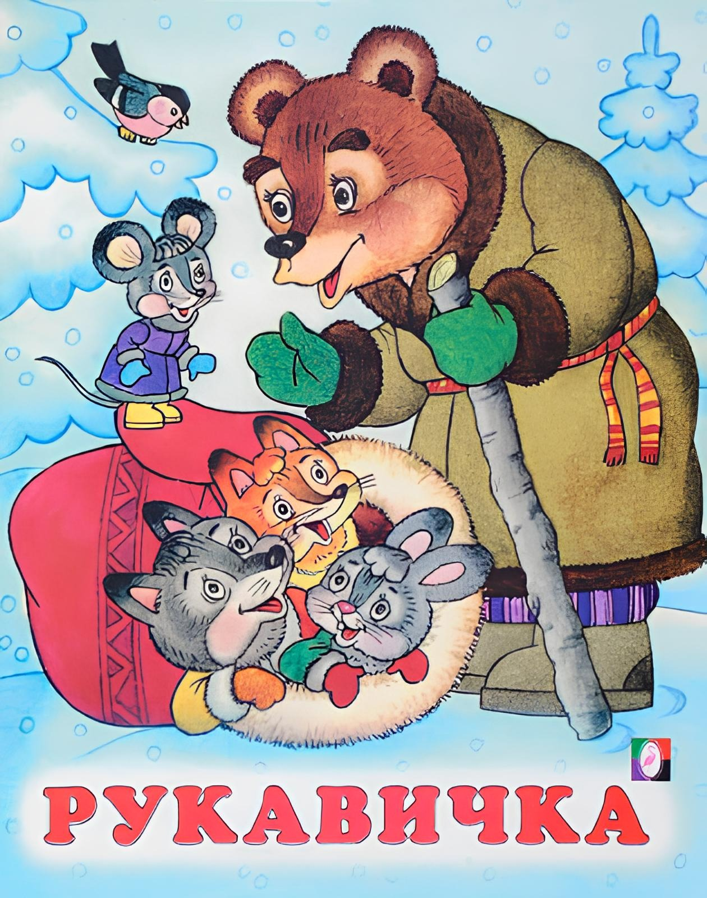
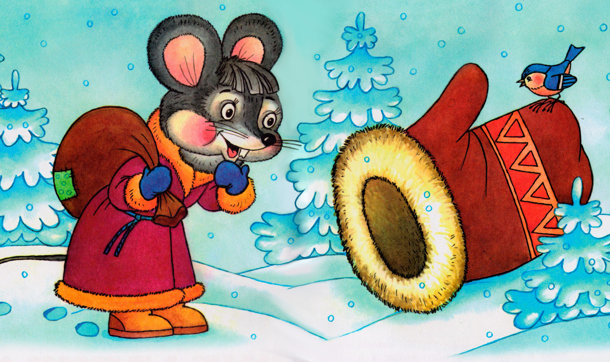
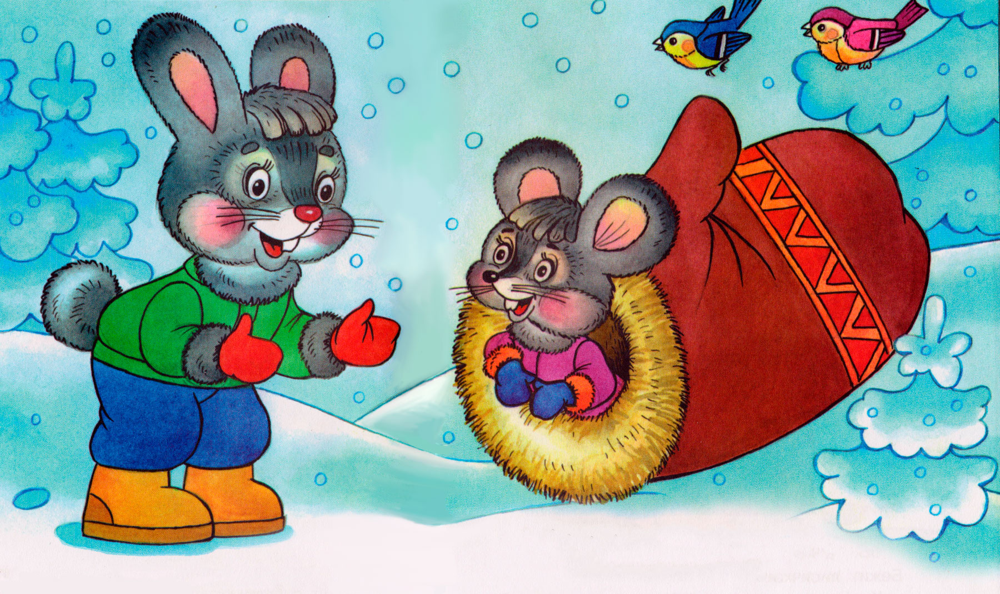
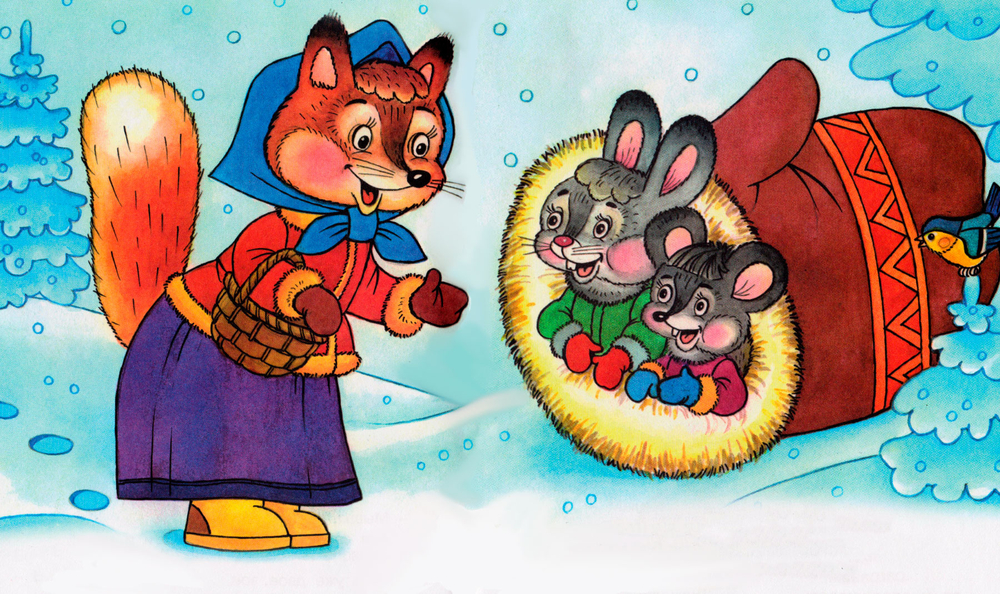
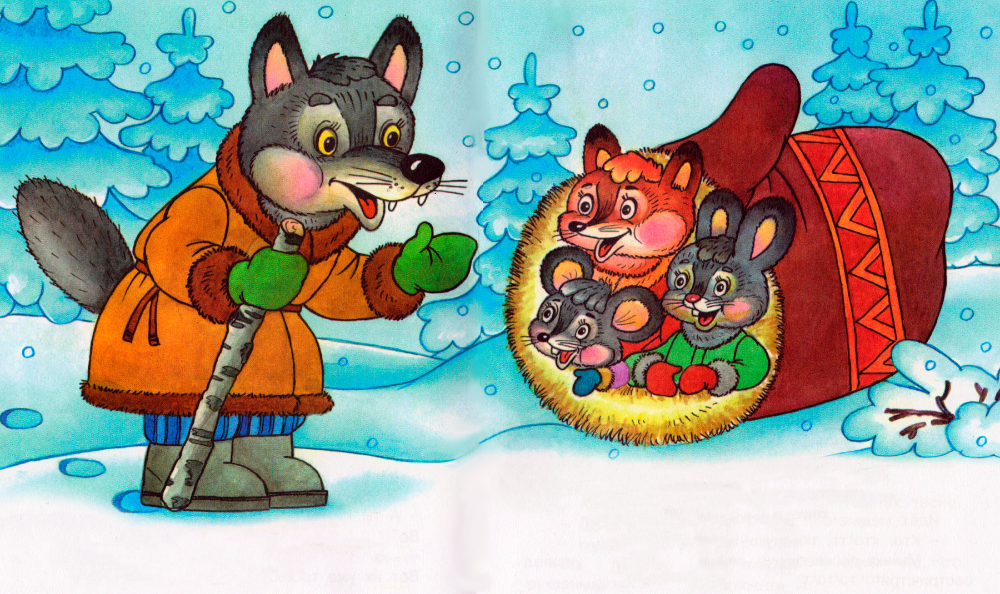
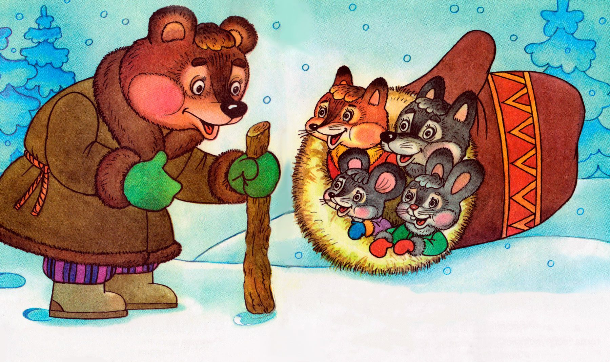
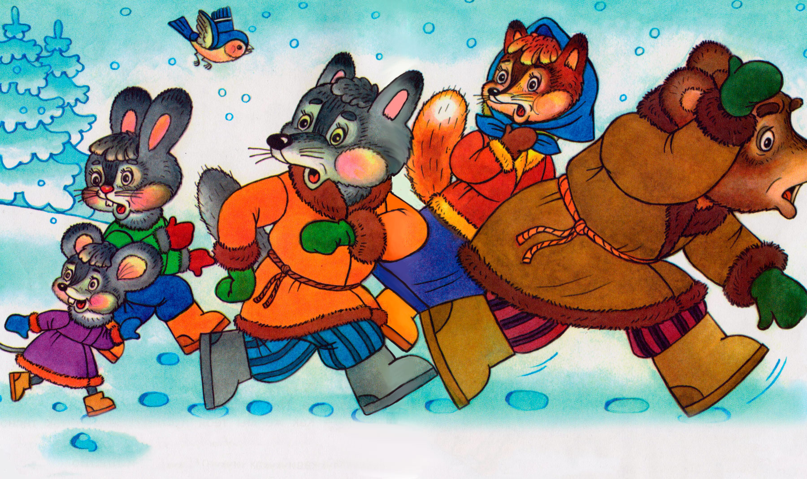
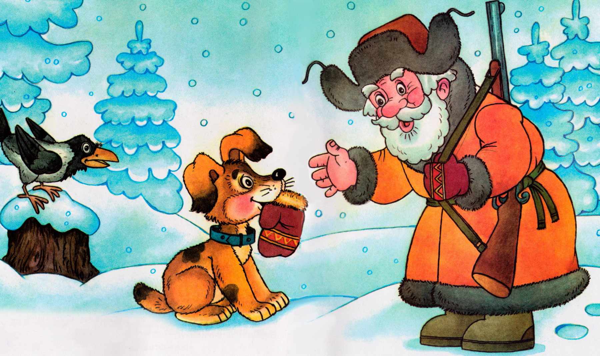

Рукавичка

Шел дед лесом, а за ним бежала собачка. Шел дед, шел, да и обронил рукавичку. Вот бежит мышка, влезла в эту рукавичку и говорит:
— Тут я буду жить.

А в это время лягушка — прыг-прыг! — спрашивает:
— Кто, кто в рукавичке живет?
— Мышка — поскребушка. А ты кто?
— А я лягушка — попрыгушка. Пусти и меня!
— Иди.
Вот их уже двое. Бежит зайчик.

Подбежал к рукавичке, спрашивает:
— Кто, кто в рукавичке живет?
— Мышка — поскребушка, лягушка — попрыгушка. А ты кто?
— А я зайчик — побегайчик. Пустите и меня!
— Иди.
Вот их уже трое. Бежит лисичка:

— Кто, кто в рукавичке живет?
— Мышка — поскребушка, лягушка — попрыгушка да зайчик — побегайчик. А ты кто?
-А я лисичка-сестричка. Пустите и меня!
Вот их уже четверо сидит. Глядь, бежит волчок — и тоже к рукавичке, да и спрашивает:

— Кто, кто в рукавичке живет?
— Мышка — поскребушка, лягушка — попрыгушка, зайчик — побегайчик да лисичка-сестричка. А ты кто?
— А я волчок — серый бочок. Пустите и меня!
— Ну иди!
Влез и этот. Уже стало их пятеро. Откуда ни возьмись, бредет кабан:
— Хро-хро-хро, кто в рукавичке живет?
— Мышка — поскребушка, лягушка — попрыгушка, зайчик — побегайчик, лисичка-сестричка да волчок — серый бочок. А ты кто?
— А я кабан — клыкан. Пустите и меня!
Вот беда, всем в рукавичку охота.
— Тебе и не влезть!
— Как-нибудь влезу, пустите!
— Ну, что ж с тобой поделаешь, лезь!
Влез и этот. Уже их шестеро. И так им тесно, что не повернуться!
А тут затрещали сучья: вылезает медведь и тоже к рукавичке подходит, ревет:

— Кто, кто в рукавичке живет?
— Мышка — поскребушка, лягушка — попрыгушка, зайчик — побегайчик, лисичка-сестричка, волчок — серый бочок да кабан — клыкан. А ты кто?
— Гу-гу-гу, вас тут многовато! А я медведюшка — батюшка. Пустите и меня!
— Как же мы тебя пустим? Ведь и так тесно.
— Да как-нибудь!
— Ну уж иди, только с краешку!
Влез и этот. Семеро стало, да так тесно, что рукавичка того и гляди, разорвется.
А тем временем дед хватился — нету рукавички. Он тогда вернулся искать ее. А собачка вперед побежала. Бежала, бежала, смотрит — лежит рукавичка и пошевеливается. Собачка тогда:
— Гав-гав-гав!
Звери испугались, из рукавички вырвались — да врассыпную по лесу.

А дед пришел и забрал рукавичку.

(Обработка Евгения Чарушина)